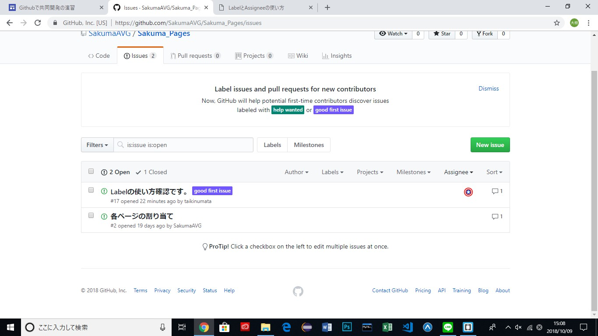

*** ページの概要 ***
Labelの追加
新しい label が追加されました
Labelを利用してIsuueを追加

Issue が作成されました。Issueのトップページで確認してみます。
左下の labels を選択することで任意の課題のみを絞り込んで表示できます。
label の削除
担当者を明確にする「Assignee」機能

Assigneeはもちろん途中で付け替えることもできます。そしてIssueの一覧画面ではアイコンが並ぶので、誰がどのくらいのタスクを抱えているかが一目で分かるようになります。 Assigneeに指定することで、通知も逃さず受け取ることができます。ただ、1つのIssueに対して1人しかアサインできないという難点もあります。しっかりとルールを決めて運用していきましょう。